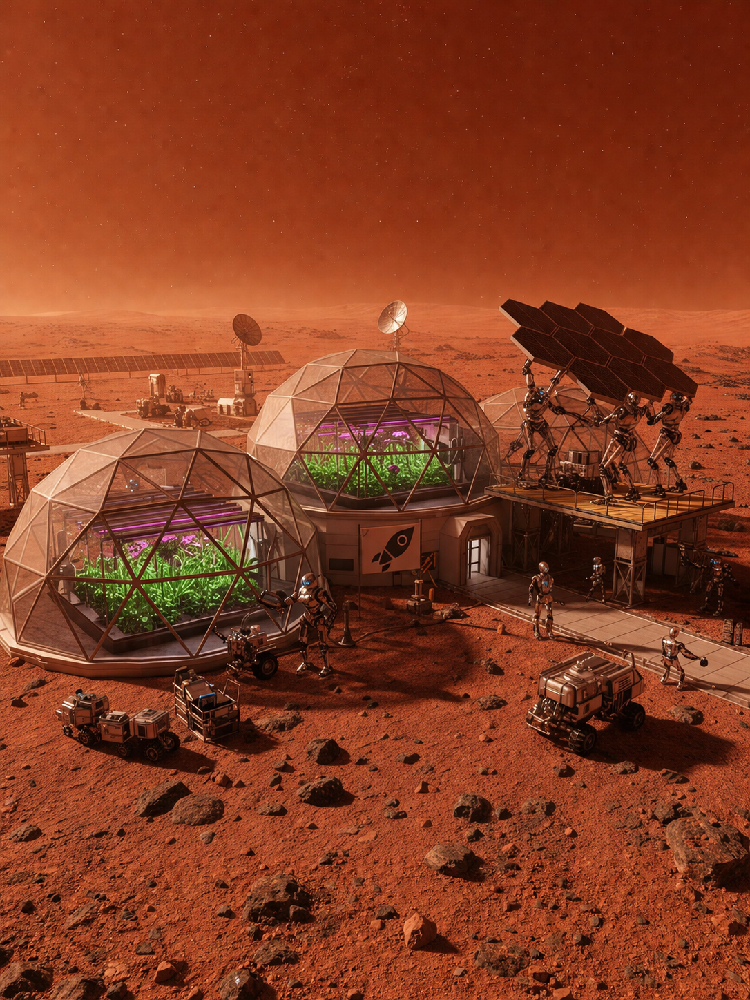

SoSe 2026
Inter.act
 x
x


digitecstudieren.de
x
Imagine
Multiple actors, all doing their designated tasks. Robots that move material, robots that build, robots that grow food, rovers that scout the surface. Different jobs, different expertise, all working in the same place at the same time.
With the current approach, you would need one central unit to handle and combine every behaviour. That works fine on a small or mid-size scenario. The moment you add more units, it falls over. One brain can't keep up with the compute that many actors demand.
So what if the brain isn't one central unit at all?

Ultimate goal
Right now every decision flows through one central controller. We want every arm and every asset to reason on its own and work out handoffs with their neighbours directly.
Project phases
Sprint 1-2 · foundation laid · Sprint 3 · AI integration · Sprint 4+ · asset communication
A factory floor in the browser. Arms, shuttles, and conveyors, live state, a fail/recover lifecycle, one container per station. The base is solid, but we're still adding to it. A Node-RED style builder is what's next.
Sprint 1-2 · iteratingA local LLM (Qwen 2.5 on Ollama) is wired into the stack. The first brain handles routing. After that, every arm gets its own.
Sprint 3 · activeArms and assets work out handoffs between themselves. The main brain only steps in when its peers get stuck.
Sprint 4+ · next upArchitecture
Live demo
Arms sweep, parts move down the line, and the sidebar log streams it all live.
2D robotic arm. Picks at 180°, places at 0°, rests at 90°.
Shuttle that carries one part along waypoints between zones.
Multi-slot belt with proper backpressure. Ticks every 50 ms.
What's been built
The multi-arm pipeline picks, carries, hands off, and places. The demo runs from start to finish at every speed setting.
Every event streams to the browser over SocketIO. The sidebar shows what each arm is doing as it happens.
One contract covers every station: idle, busy, draining, failed, recovering. Arms and assets share the same machine.
Future work
Two tracks, running in parallel. One makes the system easier to author. The other gives every station its own brain.
Questions, ideas, opinions, all welcome.
INTER.act · SoSe 2026 · IN³ × AiSuNe